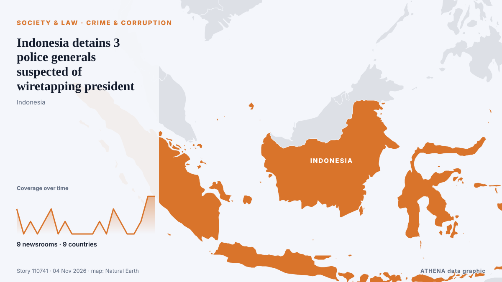

Crime et corruption
SponsoriséPrésenté par  Cybernetics and Artificial Intelligence Lab Welcome to the Cybernetics and Artificial Intelligence Laboratory, established at the Department of Business Administration of the National and Kapodistrian University of Athens. The lab is headed by Professor Dimitrios Thomakos. The lab aims to do research that can be published in top venues. Our research uses tools and methods of Artificial Intelligence, and lies in the following areas: - Forecasting - Decision making - Cyber security - Finance We are always looking forward to collaborating with exceptional students!
Cybernetics and Artificial Intelligence Lab Welcome to the Cybernetics and Artificial Intelligence Laboratory, established at the Department of Business Administration of the National and Kapodistrian University of Athens. The lab is headed by Professor Dimitrios Thomakos. The lab aims to do research that can be published in top venues. Our research uses tools and methods of Artificial Intelligence, and lies in the following areas: - Forecasting - Decision making - Cyber security - Finance We are always looking forward to collaborating with exceptional students!
| 22 oct. | 0 |
|---|---|
| 23 oct. | 0 |
| 24 oct. | 1 |
| 25 oct. | 0 |
| 26 oct. | 0 |
| 27 oct. | 0 |
| 28 oct. | 0 |
| 29 oct. | 0 |
| 30 oct. | 1 |
| 31 oct. | 2 |
| 1 nov. | 7 |
| 2 nov. | 7 |
| 3 nov. | 5 |
| 4 nov. | 0 |
Les titres sont affichés en anglais, tels que publiés.

Indonesia detains 3 police generals suspected of wiretapping president
Indonesian police have detained three senior police generals for allegedly wiretapping President Prabowo Subianto and other prominent figures. de ABC News (International)
Fairfield Police Arrest 17-Year-Old Suspected of Mass Shooting at Halloween Store
A pregnant woman was killed and six others were injured in the Friday night shooting at Solano Town Center. de KQED News (San Francisco)
S'porean, 29, who ran over & killed cyclist who stole backpack in Australia, jailed 5 years & 9 months
He accelerated believing that the car's transmission was in reverse, and ran him over. de Mothership
Mexican investigators raid storage unit rented by Meghan's father Thomas Markle
The Metropolitan Police acknowledged receiving a letter in 2019 regarding accusations about Meghan Markle’s father but did not share this information with other law agencies. de Arab News
Man arrested on suspicion of murder after disappearance of Limerick woman
Carrie Mullane (39) is known to have travelled to Enniskillen on October 10th, but has not been seen since. de The Irish Times
Boy, 14, hands himself in to police after Bradley Lowery used in sickening taunt in Coventry vs Sunderland
Bradley Lowery died aged six from neuroblastoma. de Manchester Evening News
Greek Police Arrest 11 in Katerini over Alleged Corruption in Planning Office
Four municipal employees and seven private individuals were detained as Greek police investigate allegations that officials accepted under-the-table payments to fast-track building permits, while… de To Vima (English)
Gunmen kill 2 police officers guarding polio workers in Pakistan
Another officer was wounded when militants opened fire on their vehicle near the Afghan border in Khyber Pakhtunkhwa, while four officers were abducted in a separate incident. de Free Malaysia Today
‘I am deeply sorry’: Craig Silvey pens 9,000-word apology for child exploitation material offences
The children’s author says he experienced trauma in childhood as he begins seven-month sentence for possessing depraved material Warning: This article contains graphic content Get our breaking news… de The Guardian
2 brothers arrested for allegedly shooting dead cheetah in Madhya Pradesh
During interrogation, Singh allegedly confessed that on October 24, he and Pritam Singh had gone to the forest to hunt a wild boar. de Hindustan Times
2027 Politics Watch – Sunday’s Roundup: Atiku challenges Tinubu on power as Kwankwaso tells him to stand down
Atiku Abubakar challenged the APC’s defence of President Tinubu’s electricity record and proposed replacing the tariff-band system. de Premium Times
Five arrested after brutal farm robbery in which Ventersdorp farmer had ears cut off
A massive police investigation into a violent farm robbery in Ventersdorp has resulted in five arrests, with police recovering four firearms, two of which are linked to the attack on a 50-year-old… de IOL
Greek Charity Scandal: Alleged Fraud Reaches Back to 2018
Investigators say a nonprofit that solicited donations for seriously ill children raised €3.9 million, but only €1.1 million reached identified beneficiaries, as new allegations emerge about its… de to vima
Myanmar Remains on FATF Blacklist Due to Money Laundering Concerns
The Paris-based group's announcement came after a report which said that Japanese officials had lobbied for the country's removal from its list of "high-risk jurisdictions." de The Diplomat
Japan calls on U.S. military to strengthen discipline after arrest of another U.S. Marine
The latest arrest took place on Saturday, according to media reports. de CNA (Channel NewsAsia)
Police with assault rifles begin Sydney patrols in wake of Bondi attack
SYDNEY: A new police unit armed with military assault rifles has begun patrolling the streets of Sydney, in an Australian-first measure set up in response to the Bondi Beach attack last December. de Business Recorder
Halloween shootings leave at least 24 dead and 94 wounded in the US
The shootings unfolded at nightclubs, costume stores, outside stadiums and near college campuses. de The Straits Times
Chinese Communist Party taps big data surveillance to combat corruption
A Central Committee resolution said the party would also combat corruption involving virtual currencies and blockchain. de Free Malaysia Today
Police probe Jeffrey Epstein’s time spent at Balmoral with Andrew Mountbatten-Windsor
Scottish police are investigating the time convicted sex offender Jeffrey Epstein spent with Andrew Mountbatten-Windsor at Balmoral, a private royal estate in Scotland which is a favored retreat for… de Egypt Independent